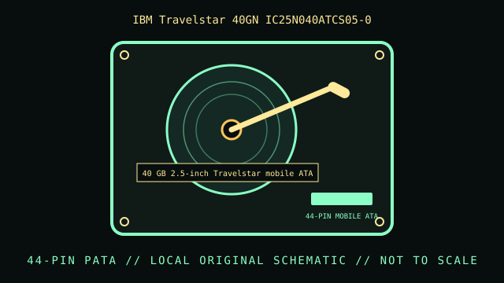

[ INDIVIDUAL COMPONENT // HARD DISK DRIVE ]
IBM Travelstar 40GN IC25N040ATCS05-0
40 GB 2.5-inch Travelstar mobile ATA drive. This record is limited to the exact model and documented variant; related model numbers, revisions and capacities can have different interfaces and specifications.

IDENTIFICATION: Match the complete label, suffix, firmware and drive inquiry with the cited model documentation. Do not infer sector format or recording method from product family alone.
Verified model specifications
| Dedicated catalog subcategory | Compact and mobile HDDs |
|---|---|
| Exact model | IBM Travelstar 40GN IC25N040ATCS05-0 |
| Product generation | 40 GB 2.5-inch Travelstar mobile ATA drive |
| Form factor | 2.5-inch mobile; this classification is not a dimensional drawing. |
| Interface | ATA / PATA mobile drive; model family uses a 44-pin laptop connector with integrated power. |
| Capacity, performance, sector / recording details | 40 GB; 4200 RPM as published for the 40GN capacity/model family. Check exact suffix/revision for buffer and sector details rather than transferring values from 40GNX variants. |
| Compatibility | Use a 44-pin ATA host or correct adapter; this is not SATA. Check thickness, connector orientation, BIOS LBA support, and legacy OS large-disk handling. |
Handling, service & preservation
- Avoid powering a loose 2.5-inch drive on a conductive surface. Preserve original partition table and capture a read-only image before attempting repairs on a vintage system disk.
- Photograph the full label, board marks, connectors, jumpers/carrier, and date/firmware codes before service; retain the exact model suffix with collection metadata.
- Never open a hard drive outside a qualified clean environment. Stop repeated power-on attempts if the unit clicks, drops offline, or develops read errors.
- Preserve source data by making independent copies and validating checksums; SMART/self-tests cannot guarantee reliability. Distinguish measured condition from manufacturer specifications.
Model-specific source
- IBM/Hitachi Travelstar 40GN ATA Product Manual (manufacturer documentation)Travelstar 40GN manual covers the 40 GB model class; IC25N040ATCS05-0 is identified by its complete suffix, distinct from 40GNX products.
For variants with family manuals, use the model-specific table and document revision that matches the drive label.